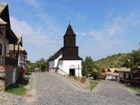
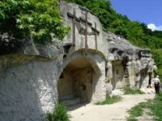
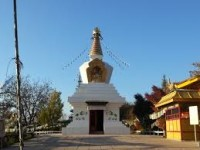

Kulturális helyek
Hollókő - Óváros
Hollókő-Ófalu a palóc hagyományok megőrzéséről és népi építészeti stílusáról ismert világszerte. A világörökség részévé nyilvánított palóc település az úgynevezett egyutcás falutípust képviseli, van egy központi út, melyre merőlegesen, szalagtelkeken helyezkednek el az épületek. Az 55 lakó- és gazdasági építményből álló védett falurész a 20. századi falusi élet emlékét idézi. A házak leggyakrabban 3 szobából álltak, falai vályogból épültek és cserépzsindelyes tető fedte, legtöbbjükhöz pedig tornác is tartozik. A Hollókői-Ófalu különlegessége, a legtöbb ház a mai napig is lakóházként funkcionál. Érdemes megnézni például: Fatornyos Hollókői Szent Márton-templom Postamúzeum Palóc Játszóház Szövőműhely Hollókőn Oskolamester háza Palóc Babamúzeum Hollókői harangjáték a Kossuth utcán
Mátraverebély – Szentkút, Remete barlangok
Mátraverebélyen található Mátraverebély Szentkút több mint nyolcszáz éve szolgál különleges helyként a zarándokoknak. A Szentkúton található, Basilica minor felé magasodó hegyoldalban lévő barlangokban pálos rendű remeték éltek a 13. századtól kezdve. A barlangok 10 összefüggő részből állnak és két kápolnát, ezek előcsarnokát, konyhát, étkezőhelyiséget, hálóhelyiséget és illemhelyeket foglalnak magába.
Tar - Békesztúpa
A Kőrösi Csoma Sándor Emlékpark, más néven a Buddha park a Nógrád megyei Taron található. Építése 1992-ben kezdődött, ekkor építették a Békesztúpát és Múzeumot, amelyet maga a Dalai Láma szentelt fel.